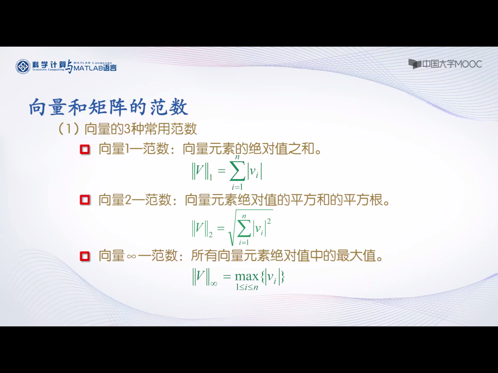

特殊矩阵
zeros:产生全0矩阵，即零矩阵
ones:产生全1矩阵
eye:产生对角线为1的矩阵，如果是方阵就得到一个单位矩阵
rand: 产生(0,1)区间均匀分布的随机矩阵，不包括0和1
randn:产生均值为0，方差为1的标准正态分布随机矩阵
这几个使用相似
zeros(m):mm的零矩阵
zeros(m,n)：产生mn零矩阵
zeros(size(A)):产生与矩阵A同样大小的零矩阵
例子：
rand函数：产生(0,1)区间均匀分布的随机数x
fix(a+(b-a+1)*x):产生[a , b]区间上均匀分布的随机整数
randn:产生均值为0，方差为1的标准正态分布随机矩阵
μ + ☌x：得到均值为μ，方差为☌^2的随机数
专门学科的特殊矩阵
魔方矩阵
M = magic(3)
M =
8 1 6
3 5 7
4 9 2
n阶魔方阵由1，2，3.一直到n方个整数组成，每行，每列以及主副对角线元素之和都相等
n阶魔方阵每行每列元素之和为(1+2+3+…+n^2)/(n+n^3)/2
范德蒙矩阵
如果连这个都不知道，就自己去看线性代数，或者百度
vander(V):生成以向量V为基础的范德蒙矩阵
A = vander(1:5)
希尔伯特矩阵
[1 ， 1/2， 1/3，……， 1/n]
|1/2， 1/3， 1/4，……， 1/(n+1)|
|1/3， 1/4， 1/5，……， 1/(n+2)|
……
[1/n， 1/(n+1)，1/(n+2)，……，1/(2n-1)]
其元素A（i,j）=1/(i+j-1)，i,j分别为其行标和列标。
hilb(n)来进行生成
format rat
H=hilb(4)
伴随矩阵
compan(p)
例如生成多项式x^3-2x^2-5x+6
p=[1, -2, -5, 6]
A=compan(p)
帕斯卡矩阵
斜着的杨辉三角
Pascal矩阵的第一行元素和第一列元素都为1，其余位置处的元素是该元素的左边元素加上同列中行数小于其的其他元素。例如：a（i，j）=a（i，j－1）+a（i－1，j－1）+……+a（1，j－1）。
函数pascal(阶数)
矩阵变换
对角阵
对角矩阵，数量矩阵，单位矩阵
提取矩阵的对角线元素
diag(A): 提取矩阵A主对角线元素，产生一个列向量
diag(A,k): 提取矩阵A第k条对角线的元素，产生一个列向量
k值：以主对角线为0，往上平行为正，往下为负
构造对角矩阵
diag(V):以向量V为主对角线元素，产生对角阵
diag(V,k):以向量V为第k条对角线元素，产生对角矩阵
左乘对角阵，则是将每一行乘以对角线元素
右乘对角阵，则是将每一列乘以对角线元素
三角阵
上三角矩阵
triu(A):提取矩阵A的主对角线及以上的元素
triu(A,k):提取矩阵A的第k条对角线及以上的元素
下三角矩阵
tirl：用法与triu完全相同
矩阵的转置
转置运算符是小数点后面接单引号(.’)
共轭转置，运算符是单引号(‘),它在转置的基础上要取每一个数的复共轭
矩阵的旋转
rot90(A,k):将矩阵A逆时针旋转90度的K倍，当k为1时可以省略
矩阵的翻转
fliplr(A):对矩阵A左右翻转
flipud(A):对矩阵A上下翻转
矩阵求逆
inv(A): 求方阵A的逆
例子用求逆矩阵的方法解线性方程组
x+2y+3z=5
x+4y+9z=-2
x+8y+27z=6
Ax=b → x = A^-1 b
A=[1 , 2, 3;1 ,4 ,9 ;1 ,8 , 27]
b=[5 ;-2;6]
x=inv(A)*b
矩阵求值
求方阵行列式的值
det(A):求方阵A所对应的行列式的值
易证：A的逆的行列式的值等于A的行列式的值分之一
矩阵的秩
rank(A):求方阵A的秩
列子：求3-20阶魔方阵的秩
for n = 3 : 20
r(n) = rank(magic(n));
end
bar(r)
grid on
axis([2,21,0,20])
结果：
奇数阶魔方阵秩为n，即奇数阶魔方阵是满秩矩阵
一重偶数阶魔方阵秩为n/2+2(n是2的倍数，但非4的倍数)
双重偶数阶魔方阵秩均为3(阶数是4的倍数)
矩阵的迹
等于对角线元素之和，也等于矩阵的特征值之和
trace(A):矩阵的迹
向量和矩阵的范数
矩阵或向量的范数用来度量矩阵或向量在某种意义下的长度
向量的3种范数
